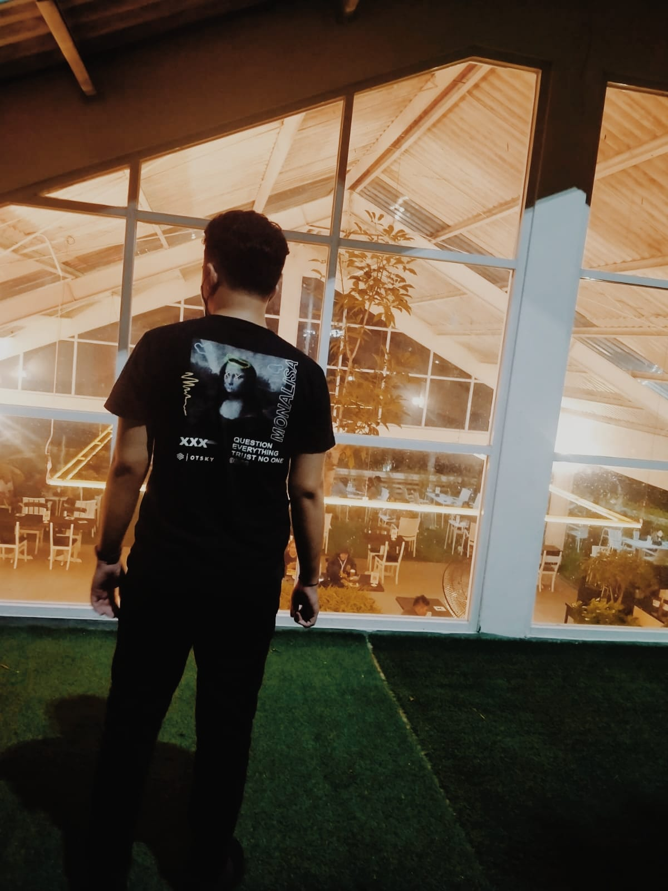
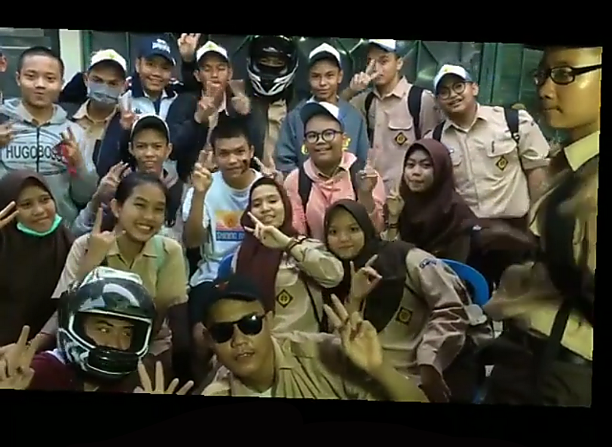
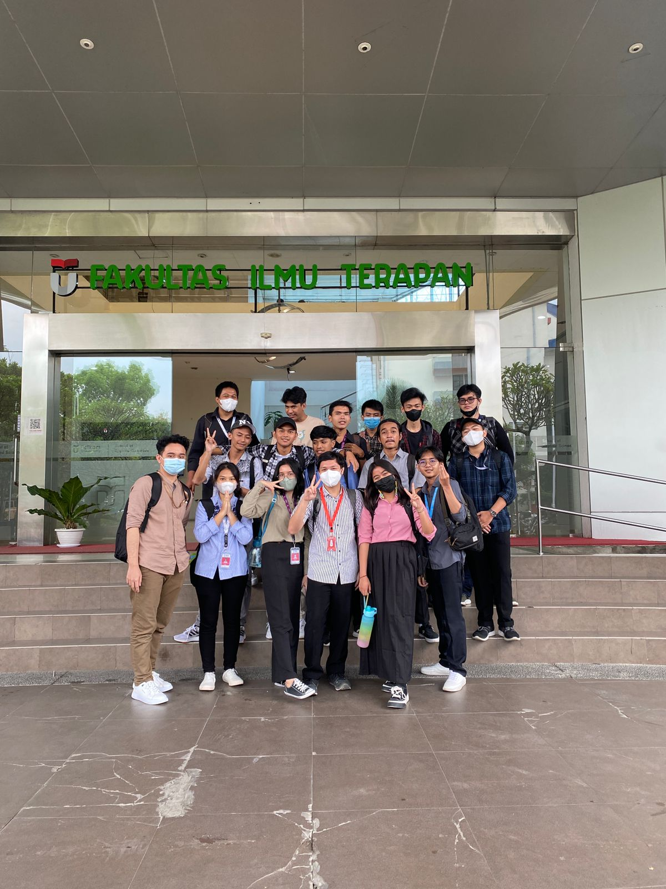
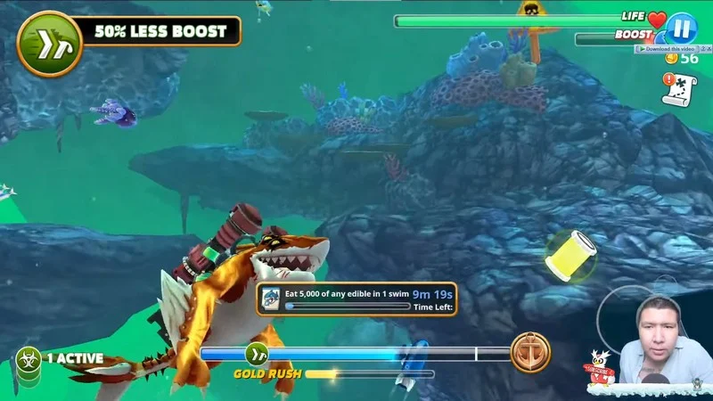

Kenalan dulu brow!

Hai namaku adalah Naufal Rizq Ramadhan, aku lahir di suatu daerah di jawa timur pada tanggal 30 November 2002. Dan sekarang sedang menjadi mahasiswa di salah satu universitas swasta terbaik yaitu Telkom University.
Jurusanku adalah Rekayasa Perangkat Lunak Aplikasi (RPLA) karna aku tertarik pada bidang IT dan ingin membuat sebuah aplikasi yang nantinya akan berguna dan bermanfaat bagi semua orang.
Perjalanan Hidup

Perjalanan hidupnya diceritain mulai dari jaman SMK aja deh, nanti kepanjangan kalo dari bayi. Jadi dulu sebelum masuk ke Telkom University aku sekolah di SMK Telkom Jakarta dengan jurusan yang sama seperti dikampus sekarang yaitu RPL(Rekayasa Perangkat Lunak). nah saat sebelum masuk ke RPLA di Tel-U, aku ada 2 opsi yaitu mau masuk ke sekolah kedinasan atau opsi terakhirnya yaitu kuliah swasta. Mungkin karna belum rejeki pada saat proses masuk ke sekolah kedinasan aku gagal :(
Nice to know u guys!

Tapi setelah itu aku malah menemukan temen-temen seperjuangan yang luar biasa disini, karna kejadian ini aku percaya kalau rencana yang MahaKuasa yang terbaik. ^^
Hobi
Nah yang ini nih, ga penting tapi penting buat diketahui, aku yakin kalian gapeduli sama bagian ini tapi gapapaaa wlee :b
Game

Tentu saja yang pertama itu gameeee, siapa si yang gapernah main game. Pasti pernah semua kan, nah game ini jadi salah satu jalan keluarku ketika udah stress sama segala urusan, nah buat ngilangin stressnya biasanya ini aku main game walaupun kadang main game bisa bikin tambah stress juga, tapi lumayanlah buat refreshing otak jugaa.
Dunia IT
Selanjutnya disini adalah teknologi, segala sesuatu yang bersangkutan dengan teknologi aku suka, baik itu Hardware ataupun Software. Susah juga sih buat dijelasinnya tapi tiap ketemu sesuatu yang berbau teknologi tuh kaya nyaman aja.